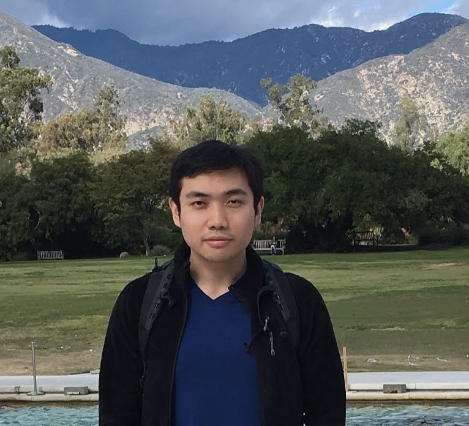

Jiayin Guo
PhD student in mathematics with interest in computer science. My CV is here(TODO).
 Since 2013, I am in UCLA mathematics and have joined The UCLA Geometry Group. Before, I studied mathematics at Tsinghua University.
Research
I study Kähler geometry and Teischmüler theory. I'm specifically interested in curvature properties of Weil-Peterson metric over Teischmüller space of Kähler-Einstein manifolds. I recently put an article(TODO) on this topic. I have given the following presentions:
- TODO
Programming
Teaching
- 10A. Introduction to Programming of C++: Fall 2018
- 10A. Introduction to Programming of C++: Winter 2018
- 132 Complex Analysis with Applications: Fall 2017
- 32B Calculus of Several Variables: Spring 2017
- 135 Ordinary Differential Equations: Winter 2017
- 132 Complex Analysis with Applications:: Winter 2017
- 32A Calculus of Several Variables: Fall 2016
- 132 Complex Analysis with Applications: Fall 2016
- 32B Complex Analysis with Applications: Spring 2016
- 135 Differential Geoetry: Winter 2016
- 132 Complex Analysis with Applications: Winter 2016
- 132 Complex Analysis with Applications: Fall 2015
- 31A Differential and Integral Calculus: Fall 2015
- 110A Algebra: Summer 2015
- 132 Complex Analysis with Applications: Winter 2015
- 3B Calculus for Students of Life Science: Winter 2015
- 3C Probability Theory for Students of Life Science:Fall 2014
- 3A Calculus for Students of Life Science: Fall 2014
- 32B Calculus of Several Variables: Spring 2014
Tutoring
I have the tutoring experence of the following course:
- 171 Stochastic Processes
- 164 Optimization
- 132 Comlex Analysis with application
- 131A Analysis
- Some lower division courses
Contact
jyguo@math.ucla.edu